Your browser doesn't support the features required by impress.js, so you are presented with a simplified version of this presentation.
For the best experience please use the latest Chrome, Safari or Firefox browser.
Apache Kafka + Zookeeper = 3.5 4.4 Million Writes Per Second by Design
"The difference between us and people above us is information." #BigData enables it
Use to navigate
have you seen this?

Agenda
- Problems that led to Kafka development
- Lots of Kafka
- A simple application
- ** My demo application is not 4.4 million writes per sec
Trends of Coding
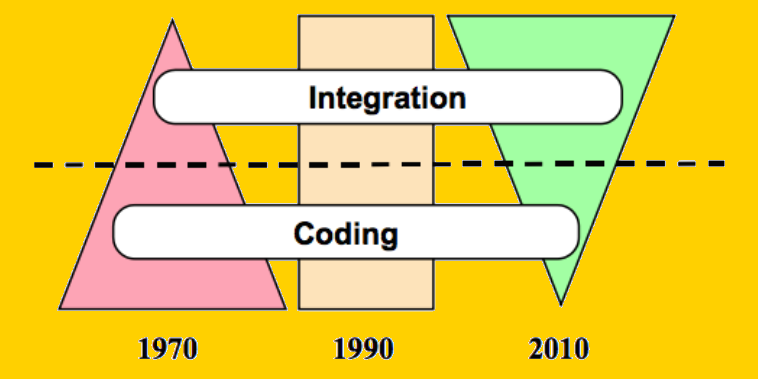
source: http://eil.stanford.edu/publications/david_liu/david_dissertation.pdf
An Analytics Application Idea
Let us start by writing an analytics application that can provide
- last one hour trends
- product sentiments
The Kafka story
The problem linkedIn faced (~2009)
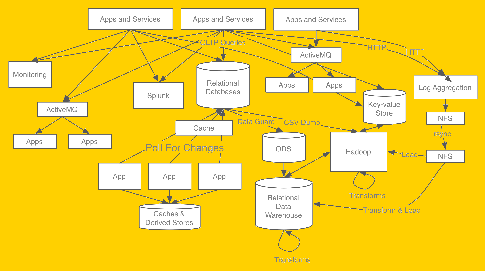
How can you reliably transfer data between systems?
source: http://blog.confluent.io/2015/02/25/stream-data-platform-1/
Proposed solution - LinkedIn
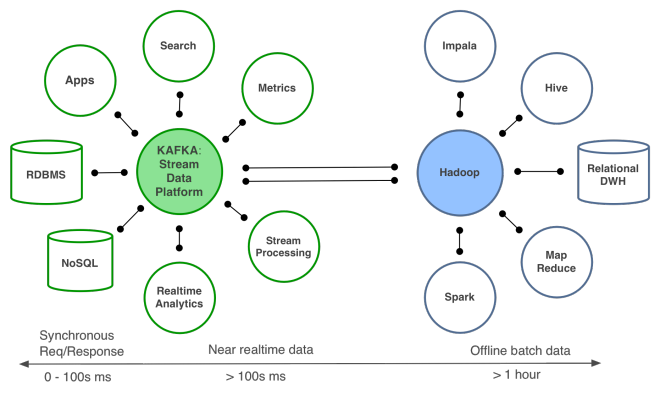
source: http://blog.confluent.io/2015/02/25/stream-data-platform-1/
Kafka based solution - LinkedIn
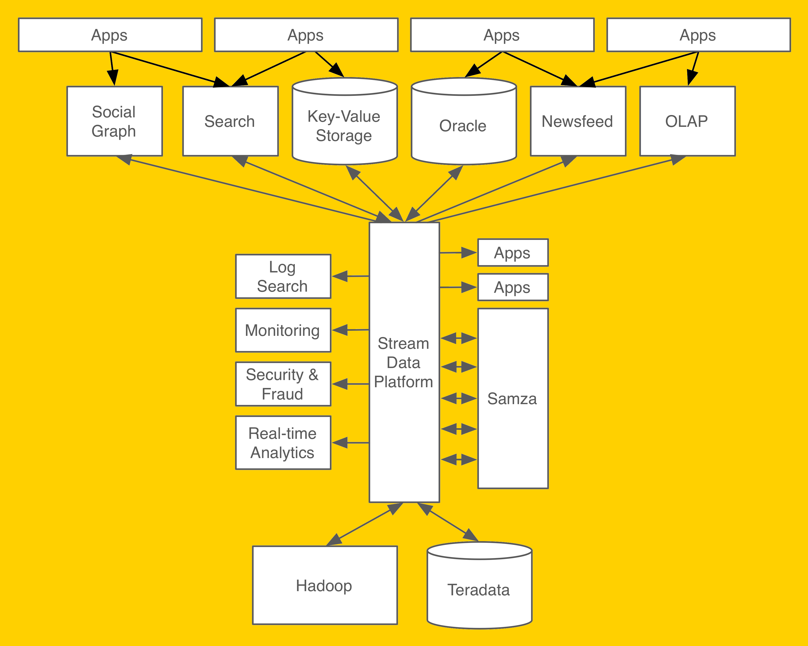
Stream centric
source: http://blog.confluent.io/2015/02/25/stream-data-platform-1/

- publish-subscribe messaging service
- distributed commit/write-ahead log
producers produce, consumers consume, in large distributed reliable way -- realtime
Timeline
- Originally developed at Linked
- Open sourced in 2011, as version 0.6
- Graduated from Apache - Oct 2012
- Written in Scala
- Latest stable - 0.8.2.1 (as of 24th, April 2015)
Why Kafka?
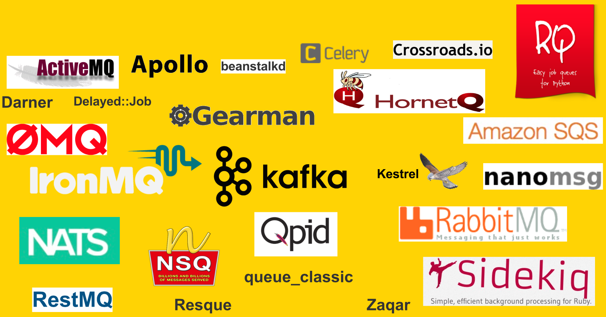
Kafka characteristics
- fast O(1)
high throughput - 4.4 million writes per second
- scalable - (350+ brokers at LinkedIn)
- durable
- distributed
- replicated (fault - tolerance)
Why Kafka?
- For highly distributed messages, Kafka stands out.
- Consumer messages are ordered per partition.
- Mechanical sympathy - linear read and writes, pagecache, batching, batch compression
- Fast reads (efficient use of page cache) and fast writes (efficient transfer from page cache to network sockets - zero copy optimization --sendfile system call)
Zero Copy
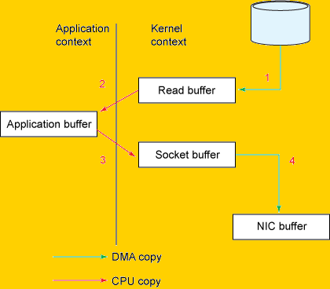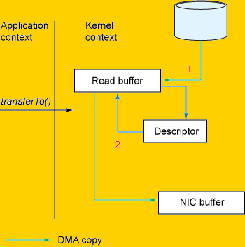
source: https://www.ibm.com/developerworks/linux/library/j-zerocopy/
Kafka at Linked (as of Nov, 2014)
- 350+ commodity machines
- 8,000+ topics
- 140,000+ partitions
- 278 Billion messages/day
- 49 TB/day in
- 176 TB/day out
Peak Load
- 4.4 Million messages/second
- 6 Gigabits/sec Inbound
- 21 Gigabits/sec Outbound
source: https://speakerdeck.com/ept/kafka-and-samza-distributed-stream-processing-in-practice
Kafka Vs Storm/Samza/Hadoop
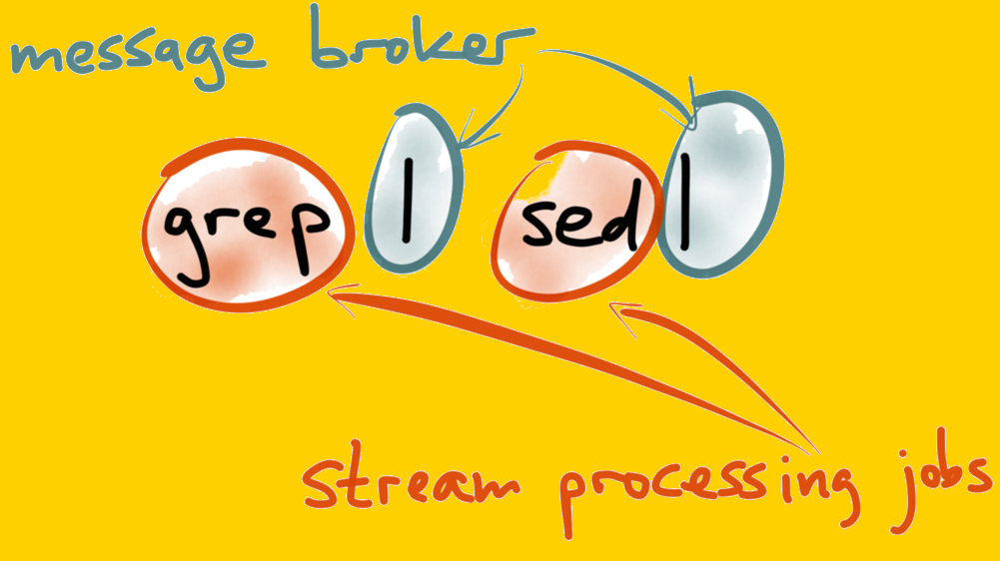
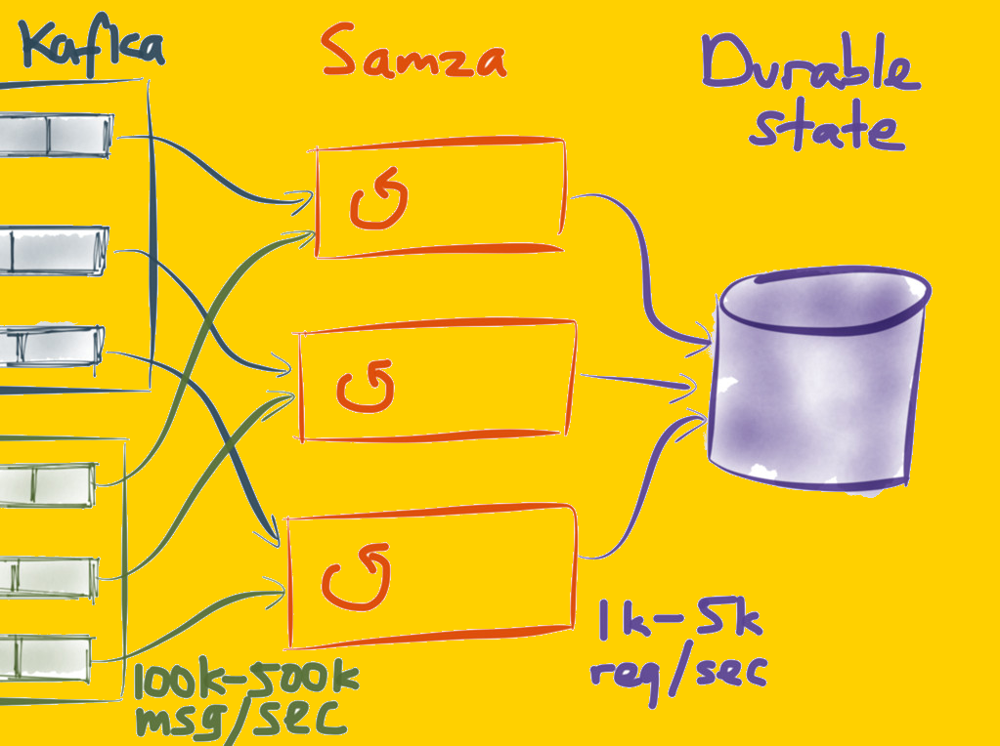
source: https://speakerdeck.com/ept/kafka-and-samza-distributed-stream-processing-in-practice
Messaging terminology
- Data is called message
- Producers publish messages.
- Messages are stored in topics.
- Each Kafka server in a cluster is called Broker.
- Topics are partitioned and replicated into Brokers.
- Consumers consume messages from brokers..
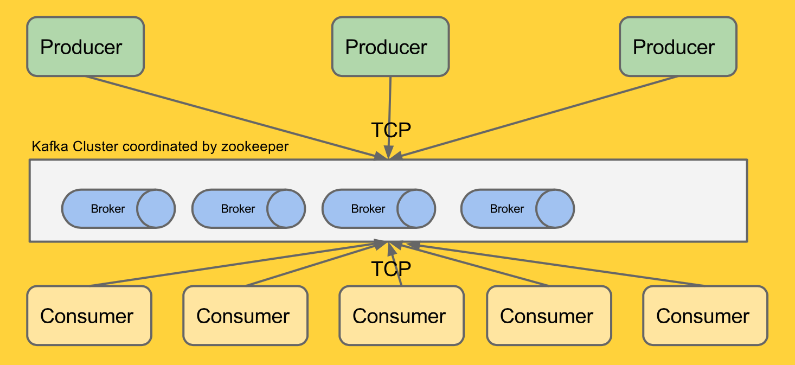
Topics
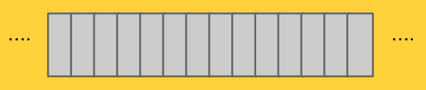
Remove messages based on :
- number of messages: log.flush.interval
- time: log.default.flush.interval.ms,topic.flush.intervals.ms
- size: log.retention.size
Partition
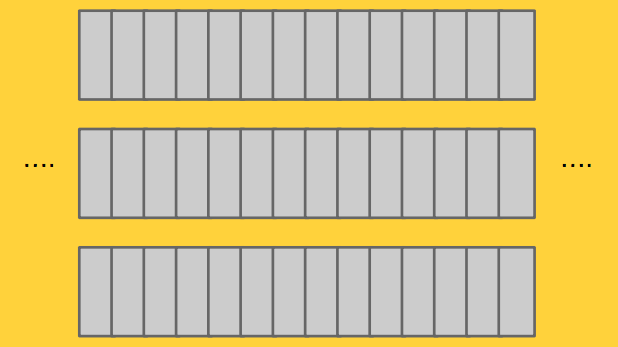
- Ordered, immutable sequence of messages
- Each message is assigned unique offset
- Serves: Horizontal scaling, Parallel consumer reads (with consumption by partition based order)
- default: or custom
Producers - push
- batching
- compression
- sync(Ack), async (auto batch - say 60k or 10ms)
- sequential writes - guaranteed order per partition
- load balancing by clients based on Partitioner
Consumers - pull
- Queue of consumers (consumer group)
- Position based on offset, controlled by consumer and persisted at intervals into topic - __consumer_offsets
- can rewind offset
- Guaranteed order per partition
- More partitions enables better parallel reads
Distribution & Replication
Brokers=4, Topic="topic1", Partition=2, Replication=3
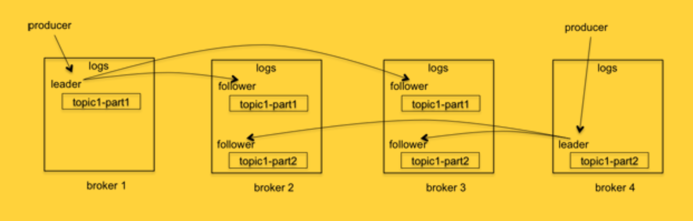
source: https://engineering.linkedin.com/kafka/intra-cluster-replication-apache-kafka
Message delivery guarantees
- At most once: Read -> Save position -> Process
- At least once: Read -> Process -> Save position
- Exactly once: Write output and position at same place
With Kafka:
- At least once: Default
- At most once: Disable Producer retries and save offset before processing
- Exactly once: Use offset to store at destination system
Usecases
- Messaging (comparable with ActiveMQ, RabbitMQ)
- Website activity tracking
- Operational monitoring
- Log Aggregation
- Stream processing (along with Storm/Samza)
- Event sourcing
- Commit log (comparable with BookKeeper)
our application Architecture and demo
Thank you...
Twitter : @ran_than
http://openscalability.com